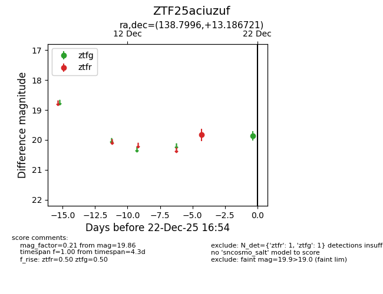
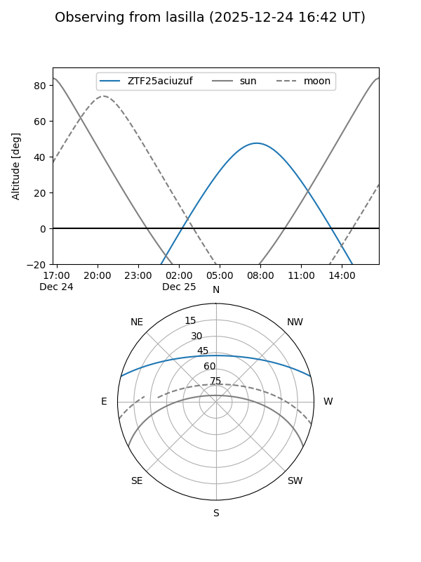
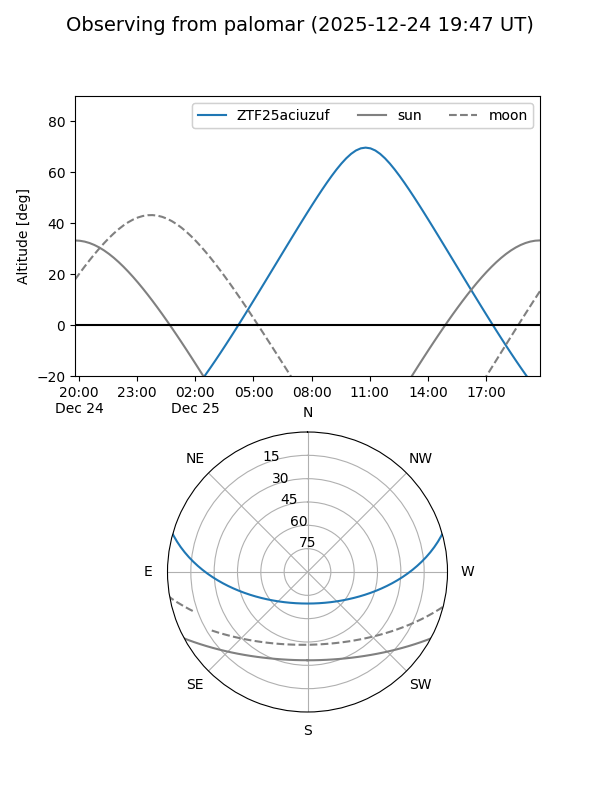

ZTF25aciuzuf
Target ZTF25aciuzuf at 2025-12-22 16:56
Aliases and brokers:
FINK: fink-portal.org/ZTF25aciuzuf
Lasair: lasair-ztf.lsst.ac.uk/objects/ZTF25aciuzuf
ALeRCE: alerce.online/object/ZTF25aciuzuf
alt names
ZTF25aciuzuf (ztf,fink_ztf)
Coordinates:
equatorial (ra, dec) = 138.7996,+13.18672
equatorial (HMS+DMS) = 09:15:11.90,+13:11:12.19
galactic (l, b) = (217.1074,+37.77893)
Flags:
Photometry:
last ztfg=19.86, ztfr=19.83
1 ztfg, 1 ztfr detections
Lightcurve

Visibility


Additional plots